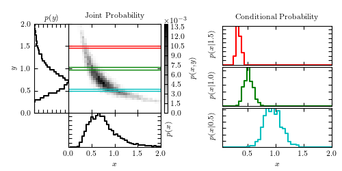

Joint and Conditional Probabilities¶
Figure 3.2.
An example of a two-dimensional probability distribution. The color-coded panel shows p(x, y). The two panels to the left and below show marginal distributions in x and y (see eq. 3.8). The three panels to the right show the conditional probability distributions p(x|y) (see eq. 3.7) for three different values of y (as marked in the left panel).
{kind=link}
# Author: Jake VanderPlas
# License: BSD
# The figure produced by this code is published in the textbook
# "Statistics, Data Mining, and Machine Learning in Astronomy" (2013)
# For more information, see http://astroML.github.com
# To report a bug or issue, use the following forum:
# https://groups.google.com/forum/#!forum/astroml-general
import numpy as np
from matplotlib import pyplot as plt
from matplotlib.ticker import NullFormatter, NullLocator, MultipleLocator
#----------------------------------------------------------------------
# This function adjusts matplotlib settings for a uniform feel in the textbook.
# Note that with usetex=True, fonts are rendered with LaTeX. This may
# result in an error if LaTeX is not installed on your system. In that case,
# you can set usetex to False.
from astroML.plotting import setup_text_plots
setup_text_plots(fontsize=8, usetex=True)
def banana_distribution(N=10000):
"""This generates random points in a banana shape"""
# create a truncated normal distribution
theta = np.random.normal(0, np.pi / 8, 10000)
theta[theta >= np.pi / 4] /= 2
theta[theta <= -np.pi / 4] /= 2
# define the curve parametrically
r = np.sqrt(1. / abs(np.cos(theta) ** 2 - np.sin(theta) ** 2))
r += np.random.normal(0, 0.08, size=10000)
x = r * np.cos(theta + np.pi / 4)
y = r * np.sin(theta + np.pi / 4)
return (x, y)
#------------------------------------------------------------
# Generate the data and compute the normalized 2D histogram
np.random.seed(1)
x, y = banana_distribution(10000)
Ngrid = 41
grid = np.linspace(0, 2, Ngrid + 1)
H, xbins, ybins = np.histogram2d(x, y, grid)
H /= np.sum(H)
#------------------------------------------------------------
# plot the result
fig = plt.figure(figsize=(5, 2.5))
# define axes
ax_Pxy = plt.axes((0.2, 0.34, 0.27, 0.52))
ax_Px = plt.axes((0.2, 0.14, 0.27, 0.2))
ax_Py = plt.axes((0.1, 0.34, 0.1, 0.52))
ax_cb = plt.axes((0.48, 0.34, 0.01, 0.52))
ax_Px_y = [plt.axes((0.65, 0.62, 0.32, 0.23)),
plt.axes((0.65, 0.38, 0.32, 0.23)),
plt.axes((0.65, 0.14, 0.32, 0.23))]
# set axis label formatters
ax_Px_y[0].xaxis.set_major_formatter(NullFormatter())
ax_Px_y[1].xaxis.set_major_formatter(NullFormatter())
ax_Pxy.xaxis.set_major_formatter(NullFormatter())
ax_Pxy.yaxis.set_major_formatter(NullFormatter())
ax_Px.yaxis.set_major_formatter(NullFormatter())
ax_Py.xaxis.set_major_formatter(NullFormatter())
# draw the joint probability
plt.axes(ax_Pxy)
H *= 1000
plt.imshow(H, interpolation='nearest', origin='lower', aspect='auto',
extent=[0, 2, 0, 2], cmap=plt.cm.binary)
cb = plt.colorbar(cax=ax_cb)
cb.set_label('$p(x, y)$')
plt.text(0, 1.02, r'$\times 10^{-3}$',
transform=ax_cb.transAxes)
# draw p(x) distribution
ax_Px.plot(xbins[1:], H.sum(0), '-k', drawstyle='steps')
# draw p(y) distribution
ax_Py.plot(H.sum(1), ybins[1:], '-k', drawstyle='steps')
# define axis limits
ax_Pxy.set_xlim(0, 2)
ax_Pxy.set_ylim(0, 2)
ax_Px.set_xlim(0, 2)
ax_Py.set_ylim(0, 2)
# label axes
ax_Pxy.set_xlabel('$x$')
ax_Pxy.set_ylabel('$y$')
ax_Px.set_xlabel('$x$')
ax_Px.set_ylabel('$p(x)$')
ax_Px.yaxis.set_label_position('right')
ax_Py.set_ylabel('$y$')
ax_Py.set_xlabel('$p(y)$')
ax_Py.xaxis.set_label_position('top')
# draw marginal probabilities
iy = [3 * Ngrid / 4, Ngrid / 2, Ngrid / 4]
colors = 'rgc'
axis = ax_Pxy.axis()
for i in range(3):
# overplot range on joint probability
ax_Pxy.plot([0, 2, 2, 0],
[ybins[iy[i] + 1], ybins[iy[i] + 1],
ybins[iy[i]], ybins[iy[i]]], c=colors[i], lw=1)
Px_y = H[iy[i]] / H[iy[i]].sum()
ax_Px_y[i].plot(xbins[1:], Px_y, drawstyle='steps', c=colors[i])
ax_Px_y[i].yaxis.set_major_formatter(NullFormatter())
ax_Px_y[i].set_ylabel('$p(x | %.1f)$' % ybins[iy[i]])
ax_Pxy.axis(axis)
ax_Px_y[2].set_xlabel('$x$')
ax_Pxy.set_title('Joint Probability')
ax_Px_y[0].set_title('Conditional Probability')
plt.show()